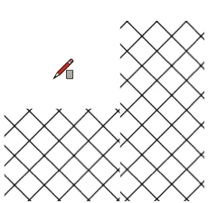

Aligning Pattern Fills |
|
When you fill a shape with a pattern, the pattern's origin will be the first point you clicked when you created the shape. While the pattern is still active in the Shape Style panel, every shape you draw will share the same pattern origin point. Use the Style tool to line up patterns on shapes that already exist. Click one to sample it, then click the other to line up its pattern with the first.  |
|